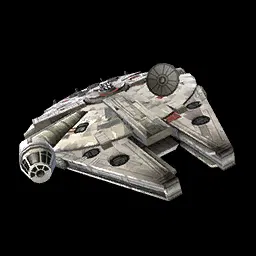
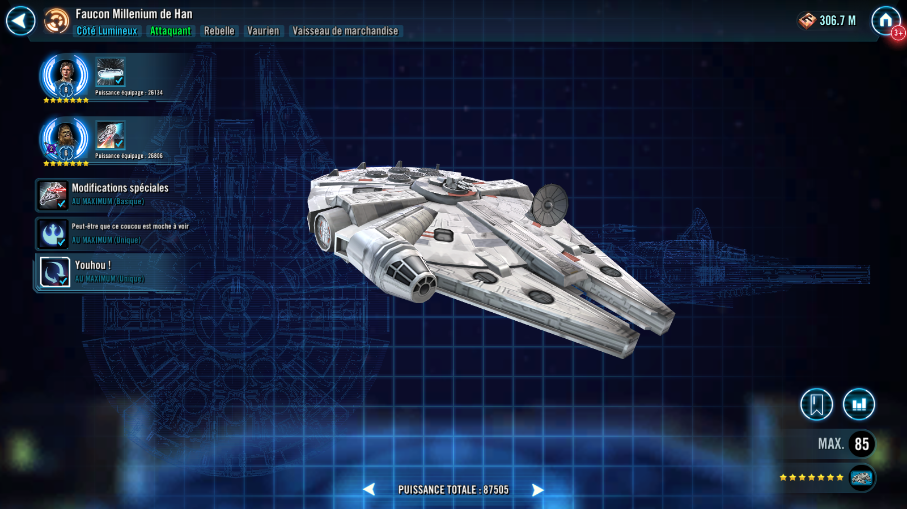
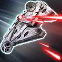

Deal Physical damage to target enemy and call another random Rebel ally to assist. Inflict Target Lock for 2 turns on a Critical Hit. If the allied Capital Ship is a Rebel and active, dispel all buffs on target enemy.
The Falcon dispels all debuffs from itself, recovers 50% Health and Protection, and gains the Outmaneuver unique buff for 3 turns (can't be copied). Additionally, it gains 35% Turn Meter for each active Rebel ally and Empire enemy.
Outmaneuver: +25% Evasion, can't be countered, and can't be targeted if other allies are present, unless Taunting
Deal Physical damage to all enemies and grant all allies Defense Penetration Up for 2 turns. This attack deals 25% more damage for each Dark Side and each Empire enemy.

All allies gain 10% Critical Chance, doubled for Rebel allies. The Falcon has a 50% chance to assist whenever another Rebel ally uses an ability during their turn. Whenever an ally reinforces, the Falcon grants them Accuracy Up for 2 turns. If that ally is a Rebel, they also gain Critical Damage Up for 2 turns. Additionally, when another Rebel ally is inflicted with 3 or more different debuffs, the Falcon dispels all debuffs on them.
Enter Battle : Grant all other allies Foresight for 2 turns and call all Rebel allies to assist. Additionally, reduce the cooldowns of the allied Rebel Capital Ship by 1 for all abilities except Call Reinforcement.